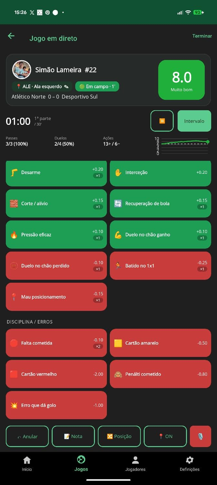
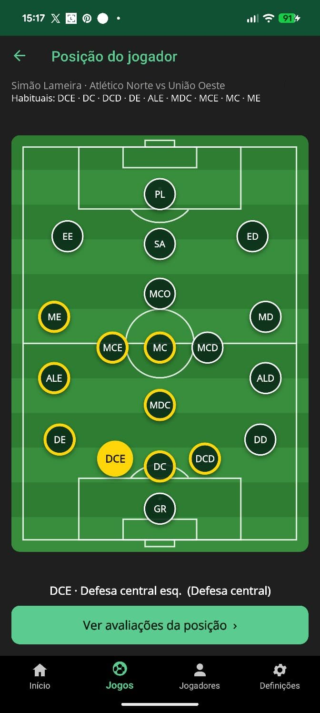
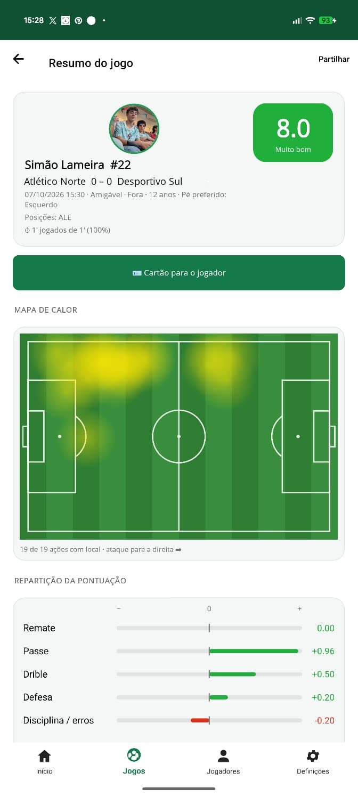
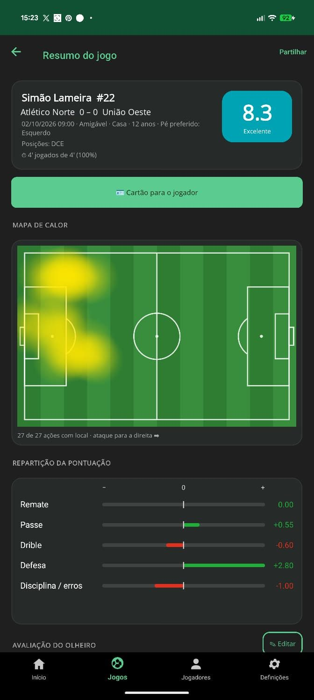
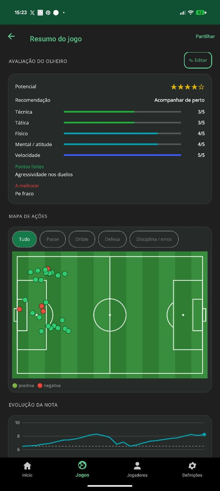
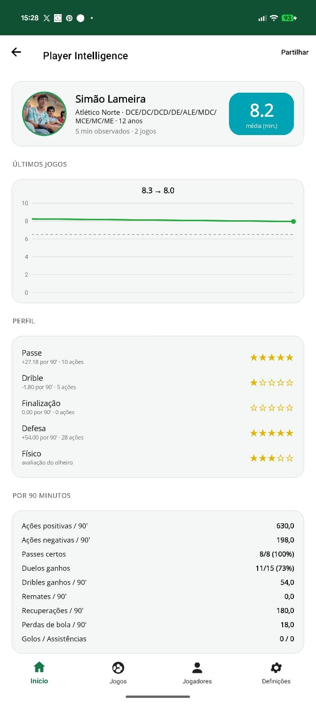
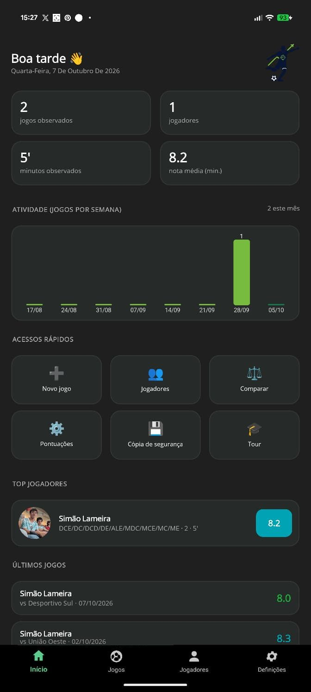
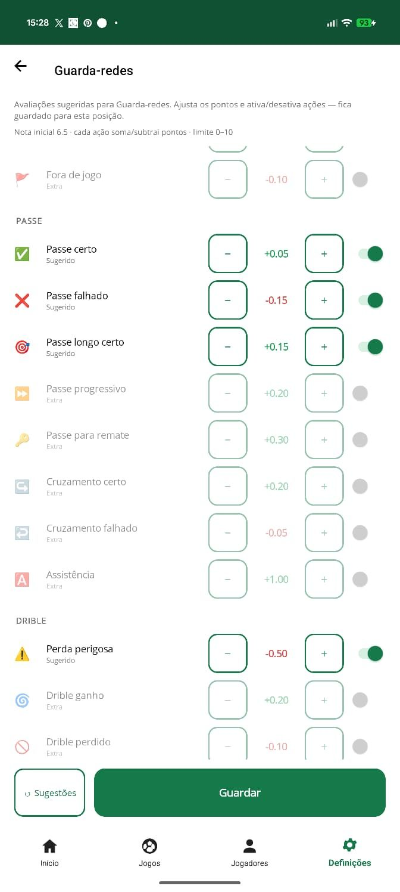

ScoutScore
Avalia jogadores de futebol em direto, ação a ação, com uma nota de 0 a 10, mapas de calor e relatórios. Sem conta, sem anúncios e offline.
Rate football players live, action by action, with a 0–10 rating, heatmaps and reports. No account, no ads, works offline.
⚽ Ao vivo
Nota em direto, ações por posição, cronómetro e substituições.
🏃 Formação
Escalões com duração própria e minutos jogados.
📊 Relatórios
Mapa de calor, repartição da pontuação e cartão para partilhar.
🔒 Privado
Os dados ficam no teu telemóvel.
Como funciona







